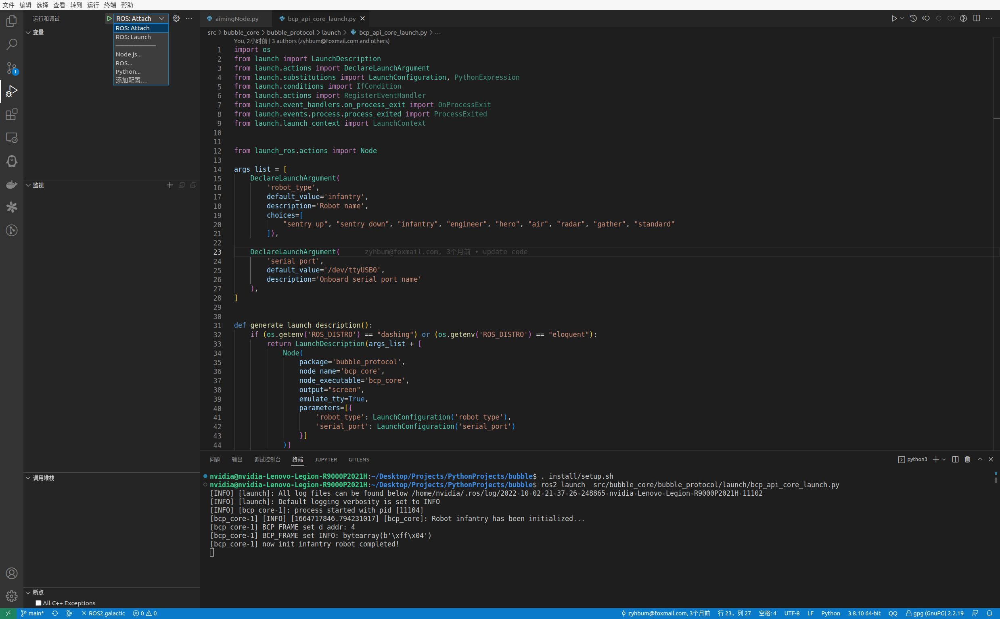
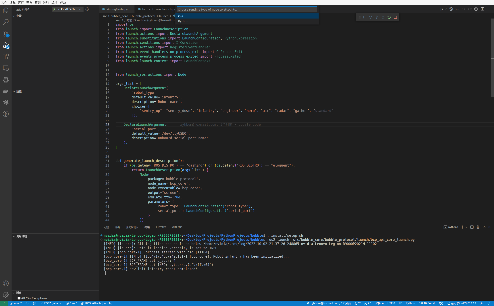
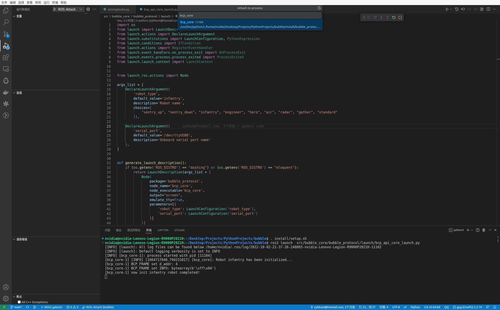
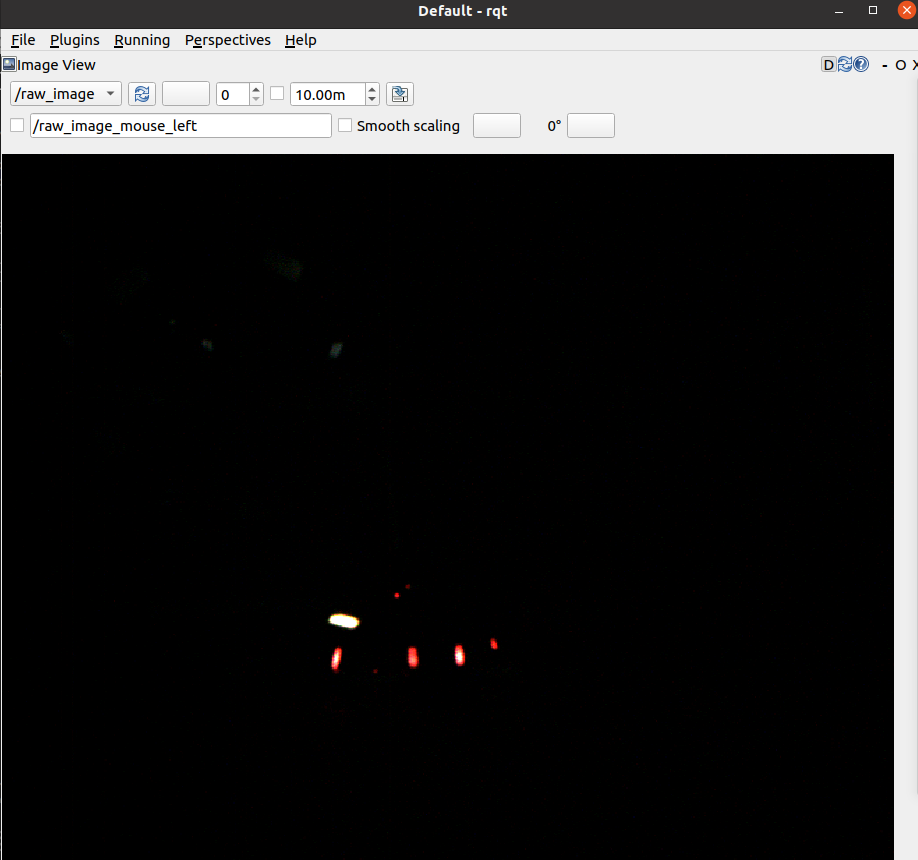
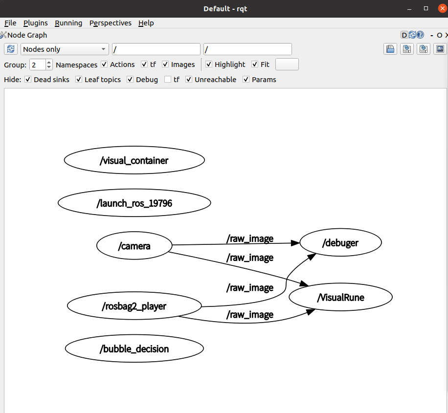
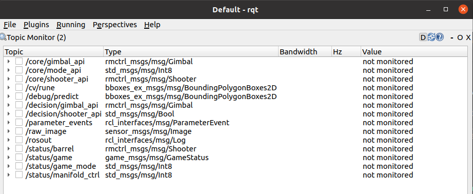
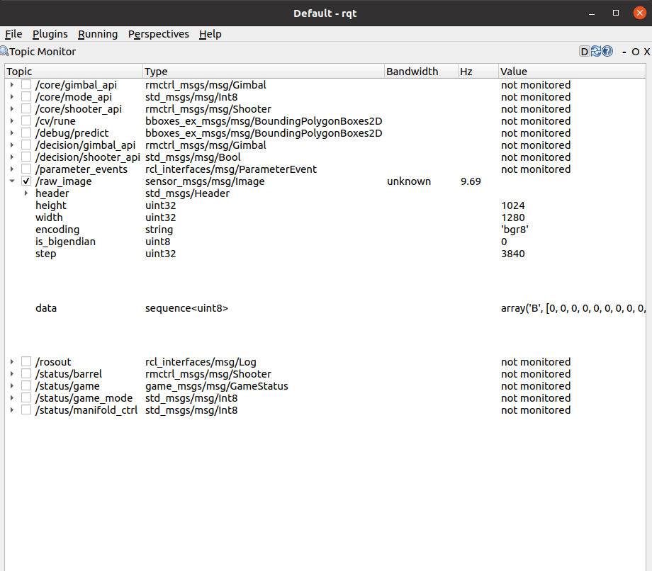
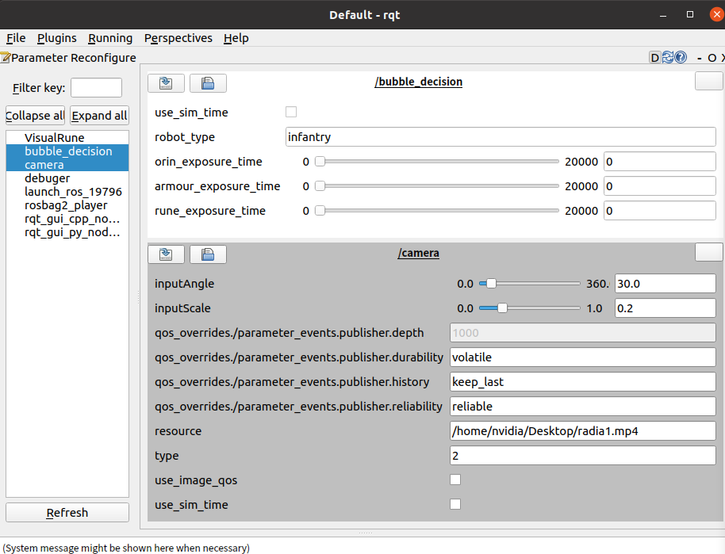

对Bubble进行调试
Goal: 通过使用vscode内的插件对Bubble的功能包进行调试
先决条件
您具备了ROS2的基础知识， 并且已完成 源码构建 内的所有步骤。
在vscode中使用ROS插件调试
在vscode中需要依靠扩展来对ROS2进行调试。在ROS扩展中共有两种调试方式launch和attach。launch调试是直接启动launch文件进行调试，类似于原生调试流程。 attach调试不同于launch调试，它是在程序运行阶段附加到进程上来为ROS进行调试,若结束调试不会对进程产生影响。
生成调试配置文件
若为首次使用ros插件进行调试，并且.vscode目录下不包含settings.json文件。请进入运行和调试界面点击下拉菜单选择添加配置，此时会自动在 .vscode目录下生成settings.json文件。 若.vscode目录下包含settings.json文件，请忽视此步骤。
使用Launch启动调试
配置launch
在settings.json文件中点击添加配置,下拉选择ROS:Launch选项 会在 “configurations”: [] 中自动添加,
{ "name": "ROS: Launch", "type": "ros", "request": "launch", "target": "absolute path to launch file" }
修改其中的”target”为所需要启动的launch文件路径。
{ "name": "ROS: Launch", "type": "ros", "request": "launch", "target": "src/bubble_contrib/bubble_aiming/launch/aiming_launch.py" }
运行launch
重新进入运行和调试界面点击下拉菜单选择ROS:Launch, 若没有对应选项请检查第一步是否完成。
在选择ROS:Launch后: Launch之后会运行对应的launch文件。
进行断点调试。
使用Attach启动调试
配置attach
在settings.json文件中点击添加配置,下拉选择ROS:Attach选项 会在 “configurations”: [] 中自动添加
{ "name": "ROS: Attach", "type": "ros", "request": "attach" }
运行attach
首先运行待调试的节点 如启动bubble_core包中的bcp_core节点。
ros2 launch src/bubble_core/bubble_protocol/launch/bcp_api_core_launch.py
重新进入运行和调试界面点击下拉菜单选择ROS:Attach, 若没有对应选项请检查第一步是否完成。
在选择ROS:Attach后会跳出选择框选择编程语言，根据要调试的节点内部使用的编程语言进行选择。
在选择完编程语言后会跳出选择进程的选择框，此处选择节点名称即bcp_core。
进行断点调试。
在rqt中调试
RQt 是一个图形用户界面框架，以插件的形式实现了各种工具和界面。 可以在 RQt 中将所有现有的 GUI 工具作为可停靠窗口进行运行。 一般使用rqt中的 Image View、Node Graph、Topic Monitor和Dynamic Reconfigure插件。
rqt使用
在终端内输入
rqt
在首次运行rqt后，窗口将为空白。需从顶部的菜单栏中选择Plugins > Introspection > Node Graph用以查看node节点关系图。
Note
可能需要一些时间 rqt 来定位所有插件本身。 如果单击 Plugins ，但没有看到 Node Graph 或任何其他选项，则应关闭 rqt ，输入命令 rqt –force-discover在您的终端中。
插件介绍
Image View
- 用于显示图像信息， 一般用于查看相机发送的图像是否正常。
- 
Node Graph
- 用于查看node节点的关系图， 一般用于检查节点与节点是否正常建立联系。
- 
Topic Monitor
- 用于查看发布的主题内的数据，一般用于查看主题内的数据是否正常。
-  
Dynamic Reconfigure
用于调试使用，一般用于对各个参数的值进行修改。
